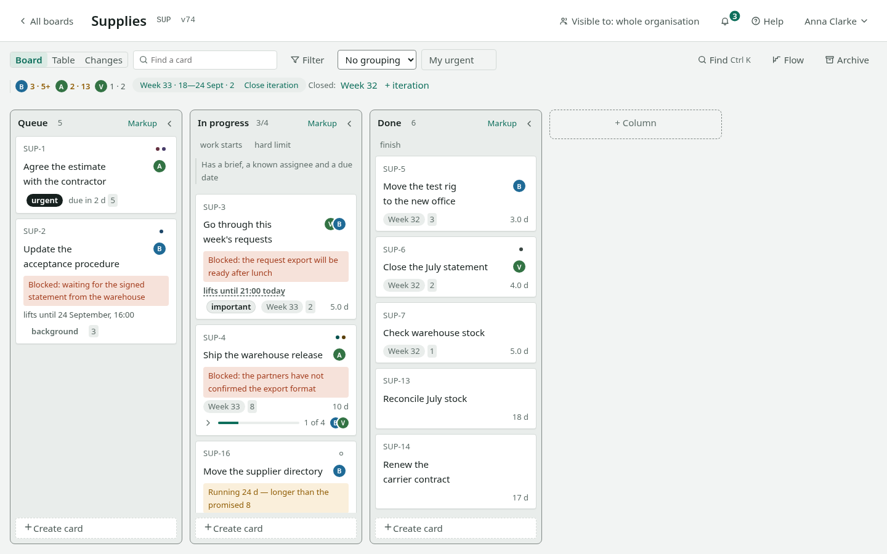

Takt
A kanban board with flow metrics, for one team: work on the board, metrics computed from that work, an organisation with roles and subdivisions, integrations. It runs inside your own perimeter — no cloud and no external services required.
The product interface is in Russian. These English pages quote everything a user clicks the way it appears on screen, with a translation next to it. The Russian original of this page is here.

Where to start
| You want to | Open |
|---|---|
| Learn to run a board | First fifteen minutes |
| Solve one specific problem | How to |
| Look up a list or a setting | Reference |
| Understand why it works this way | Design decisions |
| Keep it on one sheet | Cheat sheet |
| Install and operate it | Installation |
| Put it through a security review | Security review |
The split is not accidental. Learning, instructions, lookup and explanation answer different questions, and mixed into one text they get in each other's way: you learn in order, solve a problem by jumping straight in, and look things up in a table.
What the product does
Board. Columns are stages, cards are the work, and their order is manual. Move a card with the mouse or from the keyboard. Columns carry work-in-progress limits and entry rules. A blocked card carries the reason, not just the status. Cards split into subtasks and link to each other — including across boards owned by different teams.
Three views of the same data. The board answers "how is the work going", the table answers "what is the oldest and what did we promise", the change feed answers "what happened".
Filtering and grouping. Eight filter conditions, four ways to slice the board into swimlanes, saved views. All of it lives in the address bar: you send a configured view as a link.
Flow metrics. Cycle time as percentiles, throughput, work in progress, ageing of what is running, cumulative flow, and a probabilistic forecast. They are computed from finished work, not from fields someone filled in by hand.
Iterations. A sprint or a release with dates and a report once it is closed.
Organisation. Roles, subdivisions as a tree, three board visibilities, invitations by link, an audit log of administrative actions.
Integrations. A REST API with a published contract, keys with scopes, SCIM 2.0 directory provisioning, event subscriptions signed with a key and a delivery log, and a full data export in one file.
Sign-in. Password or a corporate identity provider (OIDC).
What the product does not do
No dates as a schedule and no Gantt charts, no public cloud with self-service sign-up, no file attachments on cards. These are not omissions: each refusal has a recorded reason, and some have a recorded condition under which they will be revisited. The full list is in the requirements (Russian).
How it is deployed
One image, one PostgreSQL database. Deploy it with docker compose on a single machine, from a binary under systemd, or with a Helm chart in Kubernetes; a package for an air-gapped network is built with one command and carried in as a file. No internet access is needed either to install or to run.
Deployment details, including what the installation requires of you, are in the installation guide; what the product commits not to break is in the requirements; what changed between versions is in the changelog.
Words you will see on screen
| On screen | Means |
|---|---|
| «Доски» | Boards |
| «Команда» | Team: people, invitations, keys, subscriptions, export |
| «Структура» | Structure: subdivisions |
| «Доска», «Таблица», «Изменения» | Board, Table, Changes — three views |
| «Поток» | Flow: metrics |
| «Архив» | Archive |
| «Завести доску», «Завести карточку» | Create a board, create a card |
| «В архив», «Вернуть» | Archive it, restore it |
| «Владелец», «Участник», «Наблюдатель» | Owner, member, viewer |